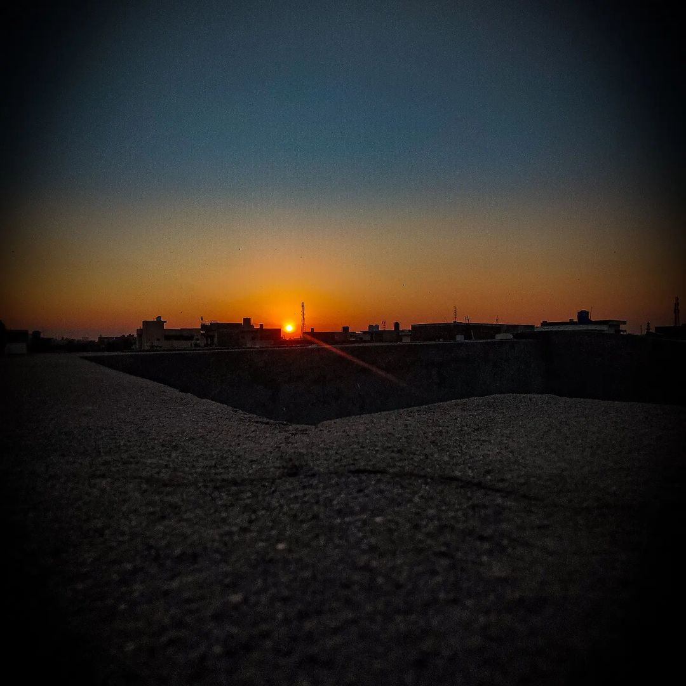
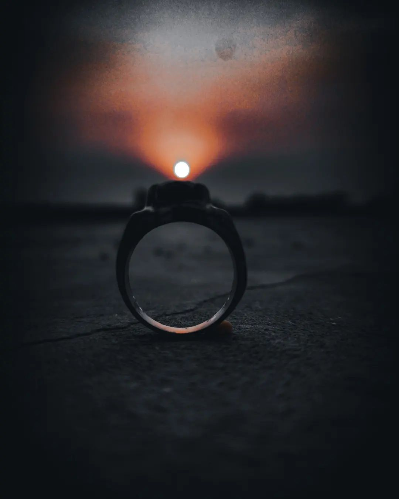
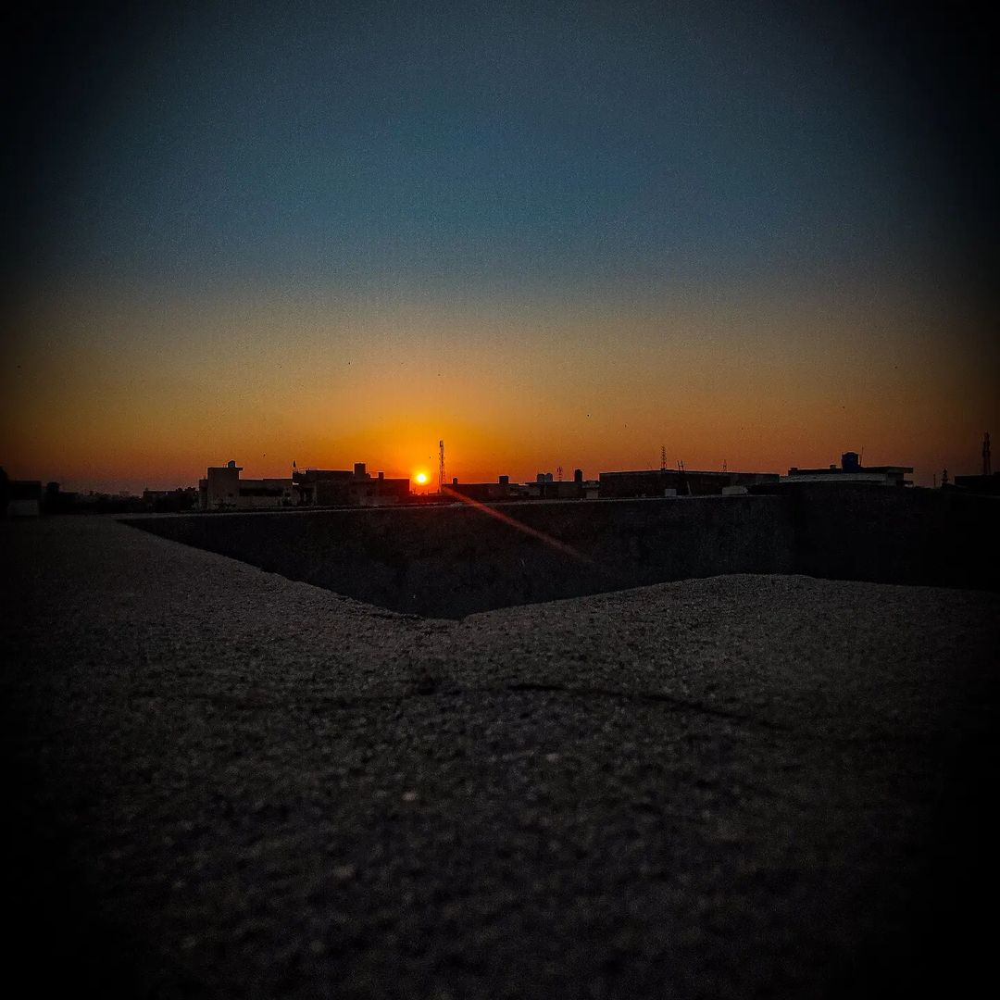
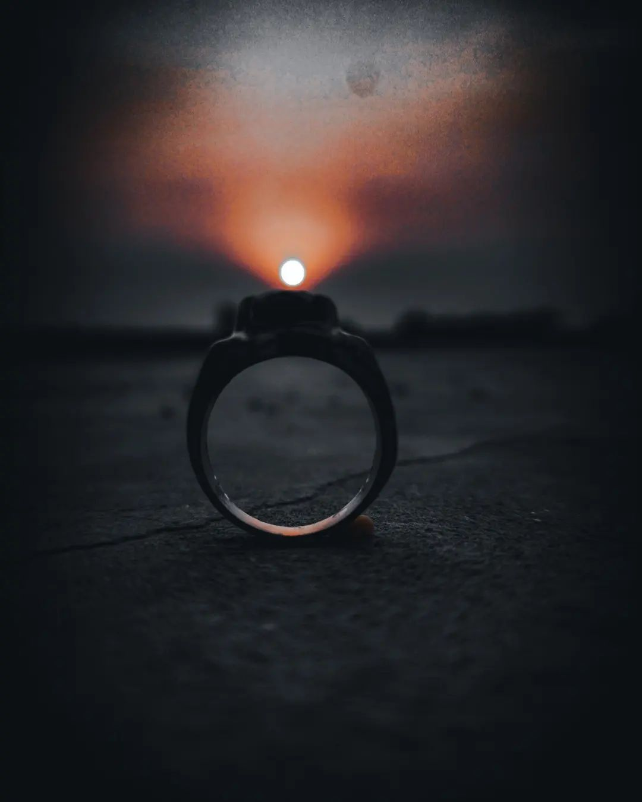
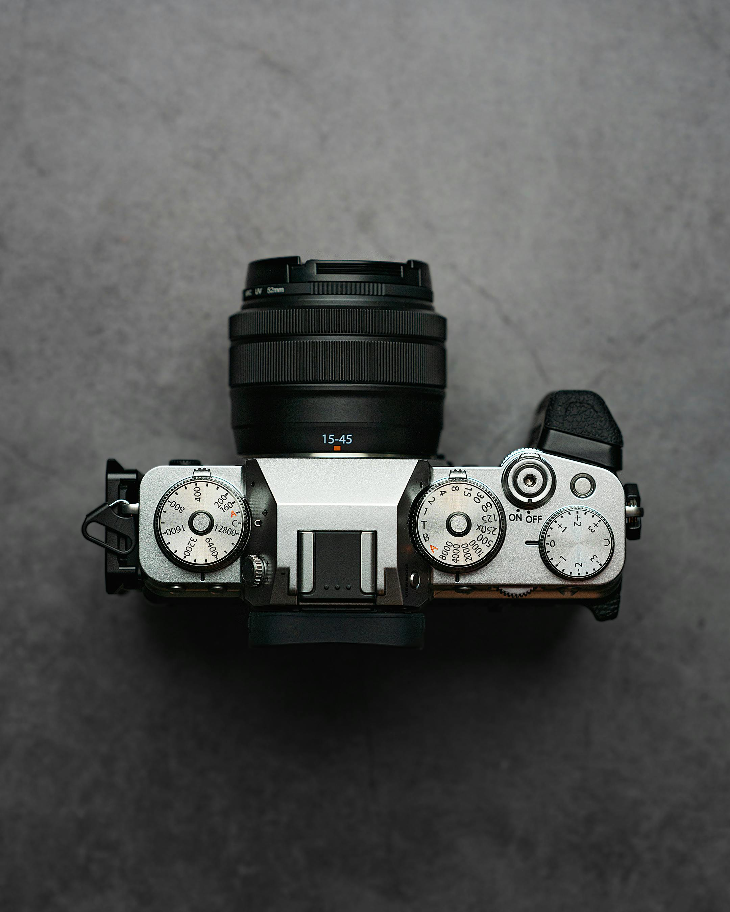

Why I Love Photography?
Photography gives me the ability to freeze time, to hold onto memories, and to tell stories through visuals. I enjoy the challenge of finding the perfect shot, playing with angles, and discovering how light can change the entire mood of a photograph. Each picture I take reflects a part of my journey, both in learning the art and in experiencing life.